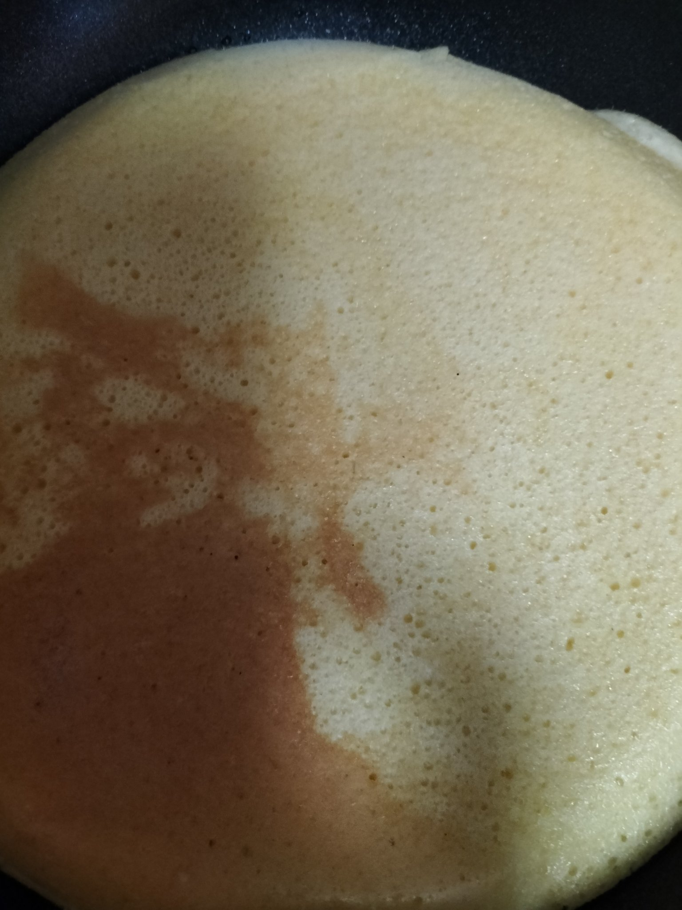

<DOCTYPE html>
  <html lang="ja">
    <head>
      <meta charset="utf-8>
      <meta name="vieport" content="width=device-width, initial-scale=1">
      <link href="style.css" rel="stylesheet">
      <title>ユニのポートフォリオ</title>
    </head>
    <body>
      <h1>unny_ui</h1>
      
      
      <h2>About</h2>
      <p>
        簡単な自己紹介やアピール。<br>
        どんなことができる，したいのか。
      </p>

      <h3>Profile</h3>
      <ul>
        <li>名前: unny_ui</li>
        <li>所在地: 東京都</li>
      </ul>

      <h3>Works</h3>
      <p>趣味で細々とやってます</p>
      <ul>
        <li><a href="https://github.com/unny-ui">GitHub</a></li>
        <li>
          作った作品
         <ul>
             <li><a href="https://github.com/unny-ui/assessment">作品</a></li>
         </ul>
        </li>
      </ul>

      <h3>Contact</h3>
      <p>連絡先</p>
      <ul>
        <li><a href="mailto:unny.ui64@gmail.com">Mail</a></li>
        <li><a href="https://twitter.com/unny_ui">X（旧　Twitter）</a></li>
      </ul>

      <h3>動画（⚠︎音量）</h3>
      <iframe width="560" height="315" src="https://www.youtube.com/embed/jC_EkIPV2uU?si=exmHOFm3S91M144U" title="YouTube video player" frameborder="0" allow="accelerometer; autoplay; clipboard-write; encrypted-media; gyroscope; picture-in-picture; web-share" allowfullscreen></iframe>

      <h3>X (旧Twitter)</h3>
      <a class="twitter-timeline" data-width="400" data-height="600" href="https://twitter.com/unny_ui?ref_src=twsrc%5Etfw">Tweets by unny_ui</a>
       <script async src="https://platform.twitter.com/widgets.js" charset="utf-8"></script>
    </body>
    </html>
